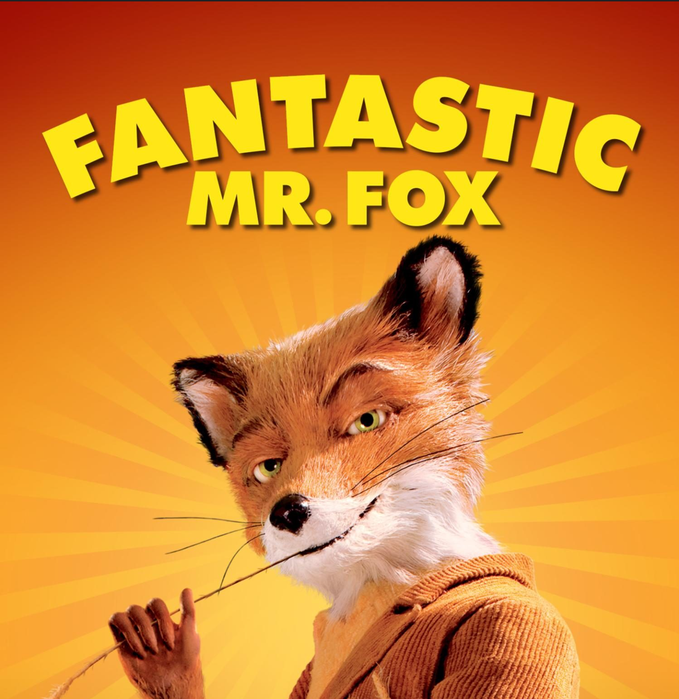

“That's the kind of movie that I like to make, where there is an invented reality and the audience is going to go
someplace where hopefully they've never been before. The details, that's what the world is made of.”
- Wes Anderson
Wes Anderson is known for his amusingly whimsical and quirky directing styles. His color pallets are often well
coordinated and make bold cinematic statements. He is known to use the same actors for many of his films;
often partnering with Owen Wilson. His cinematography is infamous for its awkward, comedic and
dead centered cinematography. He has been known to be one of the most out-of-the-box directors in the industry.
After 12 years, a domesticated and well behaved
fox gives into his natural instincts threatening his current way of living.
Heres a directors commentary on the film

FILM REVIEW